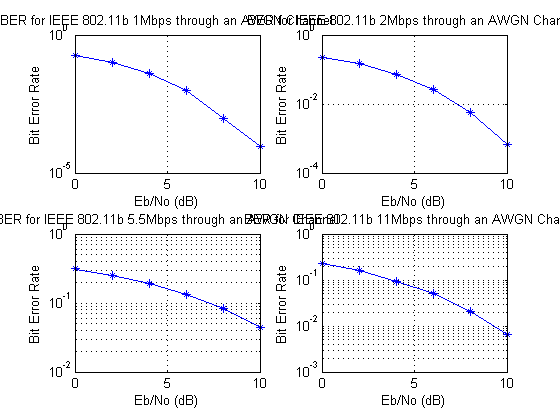

Contents
clear all,close all;
Simulation Parameters
EbNo = 0:2:10;
NumPackets = 50;
PacketSizeBits = 8192;
SamplesPerChip = 8;
Setup
modulateFunctions = {@(x) barkermod(x, 1), @(x) barkermod(x, 2),...
@(x) cckmod(x, 4), @(x) cckmod(x, 8)};
demodulateFunctions = {@(x,y) barkerdemod(x, 1), @(x,y) barkerdemod(x, 2),...
@(x,y) CCKdemod(x, 4, y), @(x,y) CCKdemod(x, 8, y)};
BitsPerSymbols = [1, 2, 4, 8];
SpreadingRates = [11, 11, 8, 8];
DataRates = [1, 2, 5.5, 11];
calcSnr = @(rate,EbNo) EbNo +10*log10(BitsPerSymbols(rate))...
-10*log10(SpreadingRates(rate)*SamplesPerChip);
Main BER Loop
BER = zeros(length(EbNo),4);
for rate=1:4
for i=1:length(EbNo)
TotalBits = 0; ErrorBits = 0;
for packet = 1:NumPackets
snr = calcSnr(rate,EbNo(i));
TxBits = randi([0 1],PacketSizeBits,1);
TxChips = modulateFunctions{rate}(TxBits);
[Samples,h,FilterDelayInChips] = TxFilter(TxChips,SamplesPerChip);
ChannelOutput = awgn(Samples, snr, 'measured');
[RxChips,TotalDelayInBits] = RxFilter(ChannelOutput,h,...
SamplesPerChip,FilterDelayInChips,...
BitsPerSymbols(rate),SpreadingRates(rate));
RxBits = demodulateFunctions{rate}(RxChips, TotalDelayInBits);
TotalBits = TotalBits+length(RxBits)-TotalDelayInBits;
NewErrorBits = sum(TxBits(1:end-TotalDelayInBits)~=...
RxBits(TotalDelayInBits+1:end));
ErrorBits = ErrorBits + NewErrorBits;
end
BER(i, rate)=ErrorBits/TotalBits;
end
end
Plot BER Results
figure('Name','BER vs. EbNo');
for rate=1:4
subplot(2,2,rate);semilogy(EbNo,BER(:,rate),'*-');grid on;
title_str = ['BER for IEEE 802.11b ' num2str(DataRates(rate))...
'Mbps through an AWGN Channel'];
title(title_str); xlabel('Eb/No (dB)'); ylabel('Bit Error Rate');
end
